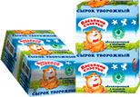
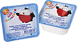
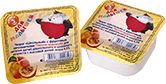

Творожная масса
«Очень важная корова»
Свежий творог, сливочное масло, вкусные наполнители (изюм, курага, школадная крошка) и немного сахара - секрет полезного и вкусного десерта «Очень важная корова». Полностью натуральный!
Творог «Васькино счастье»
Творог с разным процентом содержания жира. Обычный творог, просто немного вкуснее - для любителей классики.

Творожные сырки с изюмом
«Васькино счастье»
Отчего кот Васька такой счастливый? Да потому что он сырки с изюмом ест. Насыщенный белком сладкий творог - идеально!
Любимец самых маленьких деток! Детишки его любят за 5 классные вкусов и нежную консистенцию без комочков, а взрослые - за полезность, натуральность, гипоаллергенность и удобную упаковку. Идеально для прикорма!
Такой же творожок, но без добавок. Для тех, кто предпочитает естественный вкус! Обогащен наиболее ценными сывороточными белками!
Творог «Школьный» подходит для детишек с 3 лет. Его удобно брать с собой в школу или садик! А еще такой творожок с удовольствием едят и взрослые.